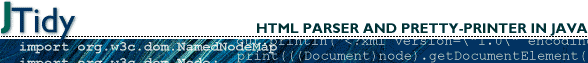

October 31, 2003
October 30, 2003
Apache的Mod_rewrite学习（一）
车东很早就写了一篇文章来介绍利用mod_rewrite模块来达到用静态页面形式的链接隐藏后台的动态页面。
Apache的rewrite模块，提供了一个基于规则的重写(rewrite,也许译为重构更为合适)引擎，来实时重写发送到Apache的请求URL。因功能极其强大，被称为URL重写的“瑞士军刀”。
October 29, 2003
Jmagick学习笔记
 JMagick是一个开源API，利用JNI(Java Native Interface)技术实现了对ImageMagickAPI的Java访问接口,因此也将比纯Java实现的图片操作函数在速度上要快。JMagick只实现了ImageMagicAPI的一部分功能，它的发行遵循LGPL协议。
JMagick是一个开源API，利用JNI(Java Native Interface)技术实现了对ImageMagickAPI的Java访问接口,因此也将比纯Java实现的图片操作函数在速度上要快。JMagick只实现了ImageMagicAPI的一部分功能，它的发行遵循LGPL协议。
ImageMagick请参考其官方网站或ImageMagick学习。
October 28, 2003
ImageMagick学习
ImageMagick是一套稳定的工具集和开发包，可以用来读、写和处理超过89种基本格式的图片文件，包括流行的TIFF, JPEG, GIF, PNG, PDF以及PhotoCD等格式。利用ImageMagick，你可以根据web应用程序的需要动态生成图片, 还可以对一个图片或图片序列进行改变大小、旋转、锐化、减色或增加特效，并将操作的结果以相同格式或其它格式保存。对图片的操作，可以通过命令行进行，也可以用C/C++、Perl、Java、PHP、Python或Ruby编程来完成。同时ImageMagick提供了一个高质量的2D工具包，部分地支持SVG。现在，ImageMagic的主要精力集中在性能、减少bug以及提供稳定的API和ABI上。
ImageMagick功能强大，却免费的。
October 27, 2003
October 26, 2003
October 25, 2003
NetCat的使用
HttpClient中反复提到用NetCAt进行调试，下载NetCat一看，确实如其所述的小巧而功能强大，如瑞士军刀。
NetCat是一个非常简单的Unix工具，可以读、写TCP或UDP网络连接(network connection)。它被设计成一个可靠的后端(back-end)工具，能被其它的程序程序或脚本直接地或容易地驱动。同时，它又是一个功能丰富的网络调试和开发工具，因为它可以建立你可能用到的几乎任何类型的连接，以及一些非常有意思的内建功能。NetCat，它的实际可运行的名字叫nc，应该早很就被提供，就象另一个没有公开但是标准的Unix工具。
GNU也有一个netcat项目，但此处学习的不是GNU的那个。
October 24, 2003
October 23, 2003
Digester学习笔记(一)
在windows下开发程序，用M$提供的接口处理.ini文件或管理注册表的键值是非常方便的。在java平台上开发程序，则习惯于以xml格式的文件来存放系统的配置信息，对这种文件的解析和处理，可以用sax或dom。有没有更简便的方法呢？有，就是用digester模块。
Digester是Jakarta 子项目Commons下的一个模块，支持基于规则的对任意XML文档的处理。它最初是Structs项目的一部分，后因其通用性而划归Commons.
October 22, 2003
HttpClient学习（五）
今天学习HttpClient对HTTP方法的支持。
"方法"这个词的含义太丰富了，在学习之前先交待一下。首先，每个类中有方法，与属性相对，可以视作函数，为区分称之”类方法“；HTML语言的表单(FORM)中也定义了方法(method),常见的是GET和POST，用以指明表单中输入的数据上传服务器的方法，称之为”HTML方法“；HTTP协议中也有方法，可视作http客户端向服务器端发送的指令(至于服务器端收到指令后执行不执行或如何执行那是另一码事)，称之为HTTP方法。
前几篇HttpClient笔记中，我对方法这个词没有根据上下文做细致的说明，估计难为了那些看笔记的朋友了。:)
October 21, 2003
Blog
from Mobile short messages! Is it interesting? Every blogger can beat CCTU Live report now.:) Hehe.
October 20, 2003
Jakarta Commons Logging学习笔记
说句实话，JCL(Jakarta Commons Logging)和log4j真把我搞蒙了。不都是做log的吗，怎么在jcl的源码包中，还有个log4j的包？倒底谁跟谁啊？至到看了jcl的用户指南，才明白一些。hehe.
October 19, 2003
October 18, 2003
文本信息检索与Trec评测
这是今天听的马少平教授的演讲题目。
清华大学参加了2002TREC评测，获得了两个第一，他们对检索的技术改进或者说贡献，主要表现三个方面：
October 17, 2003
October 16, 2003
apache/commons/httpclient学习笔记(一)
虽然用telnet这样的程序都可把页面取回来，但是在与web服务器的交互中，如果涉及cookie或https或ssl等内容，一般功能相对完备的http客户端还是非常必要的。IE或NetScape等浏览器确实不错，可是如果为实现持续互动而在程序调用浏览器，我个人认为其中的工作量还是不小的，这还没考虑版权问题。最好的办法，就是能有一个开源的包，能实现http客户端的功能，供我们开发的程序调用。httpclient就是这么一个包，我相信可能有比它的实现更好的，但目前我只关注这个。：）
October 15, 2003
处理正则表达式的java包:regexp
虽然apache认为JakartaORO是一个更完备的正则表达式处理包，但regexp的应用也是非常广泛，大概是因为它的简单吧。下面是regexp的学习笔记。
October 14, 2003
October 13, 2003
Linux安装完成之后如何装网卡
1、加载网站驱动模块
/sbin/modprobe ne2k-pci <----将此处的ne2k-pci换成合适的网卡驱动名，与驱动文件名相同但无.o
/sbin/ifconfig -a <----如果正常，此处可看到有eth0的信息
2、启动网卡
/sbin/route add -net 网络地址 netmask 网络掩码 eth0
/sbin/route add default gw 网关IP地址 eth0
ping IP地址 <----如果正常，此命令应有应答反馈
3、将上面的命令加入到/etc/rc.d/rc.local文件中（每步的最后一条命令是检测用的，不要加入）
October 12, 2003
rss1.0规范
RDF Site Summary (RSS) 1.0是一个轻量级多目的可扩展元数据描述和同步(syndication)格式。RSS是对XML的一种应用，遵循w3c的RDF规范，并且通过基于xml-命名空间和/或RDF的模块进行扩展。
深入阅读"rss1.0规范"October 11, 2003
October 10, 2003
October 09, 2003
October 08, 2003
RSS 2.0规范
RSS是 Really Simple Syndication的缩写（对rss2.0而言，是这三个词的缩写，对rss1.0而言则是RDF Site Summary的缩写，1.0与2.0走的是两个体系）
RSS 基于XML，所有的 RSS 必须遵循w3c网站上公布的XML 1.0 规范。
在一个RSS文档中，根元素是<rss>，带有一个必备属性version，用以指明该文档遵循的rss规范，如果rss文档遵循本规范，则version值必须是2.0。
<rss>元素只有一个子元素，包含关于频道的一些信息。频道(channel)是整个blog，项(item)指一篇文章或日志(也有称这为post)。
October 07, 2003
关于Google API的学习
 topku问起MT允许使用google金钥的功能，有什么好处。我凭着记忆胡说了一通，终于把他说晕了。
topku问起MT允许使用google金钥的功能，有什么好处。我凭着记忆胡说了一通，终于把他说晕了。
我抽空专门看了一下googleAPI的简介，下面是笔记。
October 06, 2003
基于XML-RPC的BloggerAPI学习
 Luliang的mail2blog脚本，通过基于XML-RPC的BloggerAPI来实现的发布blog的功能。
Luliang的mail2blog脚本，通过基于XML-RPC的BloggerAPI来实现的发布blog的功能。
BloggerAPI是一套程序接口，用以支持远程操作blog.这个规范现在的版本是1.0，是个试验版本和α版本。但是，规范的研发人员不再对BloggerAPI进一步地开发，他们正在制定一套新的、更稳定的API，新项目的名称为echo
.
关于XML-RPC
“基于internet标准的简单的跨平台分布式计算”是XML－RPC的口号。
XML-RPC是一个规范，遵循这个规范的实施，能让运行在不同的操作系统上不同的运行环境里的应用程序，通过互联网调用对方的过程（precedure）。
这种远程调用，通过HTTP进行传输，用XML进行编码。XML-RPC被设得尽可能简单，但能传输、处理及返回复杂的数据结构。
深入阅读"关于XML-RPC"October 05, 2003
什么是XJavaDoc？
XJavaDoc引擎是完全重写了的Sun的JavaDoc引擎，比后者更快，更适合于XDoclet。它扫描Java源代码，通过XJavaDoc内核的一些特殊bean从源代码中取得关于一个类的信息。这些bean除了提供如Sun JavaDoc API一样的关于类的信息外，还有一些精美的扩展功能。
XJavaDoc是从XDoclet分出来的一个子项目，也是XDoclet的核心。
October 04, 2003
Mantis学习笔记
 在错误追踪系统中，Mantis绝对是个轻量级的工具，无论安装还是配置或使用，正如它自己的目标中所宣称的。但是，对一个中小型的项目来言，功能够用。
在错误追踪系统中，Mantis绝对是个轻量级的工具，无论安装还是配置或使用，正如它自己的目标中所宣称的。但是，对一个中小型的项目来言，功能够用。
非常感谢车东的推荐，也使我进一步关注学习成本和够用就好的观点。
October 03, 2003
在Visual Studio中集成CVS的工具
Jalindi Igloo
这是一个Visual Studio.NET插件，允许你将M$ Visual Studio或其它遵循SCCAPI的IDE直接与CVS仓库连接起来，使得在VS.NET集成开发环境中可以访问CVS服务器上的文件。
这个程序完全免费，任你使用。不过，最新版本是2001年的。：（
深入阅读"在Visual Studio中集成CVS的工具"
bugzilla学习
 Bugzilla是一个bug追踪系统，用以管理bug提交、bug消除，不仅能降低同样错误的重复发生，提高开效率，而且有助于项目管理的难度。更有人打算用借助此系统，用前人的bug来教育新来的程序员，也是个不错的注意。
Bugzilla是一个bug追踪系统，用以管理bug提交、bug消除，不仅能降低同样错误的重复发生，提高开效率，而且有助于项目管理的难度。更有人打算用借助此系统，用前人的bug来教育新来的程序员，也是个不错的注意。
这使我想起一个调侃SYBASE创始人Kertzman的笑话，Kertzman年青时曾是民间歌手、电台主持和加油工，后来非常“喜欢编程”，为一个教育软件公司写了四年的程序。现在，SYBASE公司用Kertzman的代码来告诫新的程序员们，如果他们写出这样的代码，那么就会滚蛋。
October 02, 2003
JTidy学习笔记

JTidy是HTML Tidy(一个HTML语法检查器和优雅的打印编排工具）的Java移植，除了本身具有的清除HTML文件难看或错误内容的功能外，还提供了一个DOM接口，程序员可以将JTidy当作一个处理HTML文件的DOM解析器来使用。
October 01, 2003
自动监控主页，篡改短信通知
10.1长假，很多网管的一个重要任务是监控自己的主页被黑了没有。下面写了个脚本，把页面的变动用手机短信提醒一下，这样就不用定期用浏览器进行访问了。